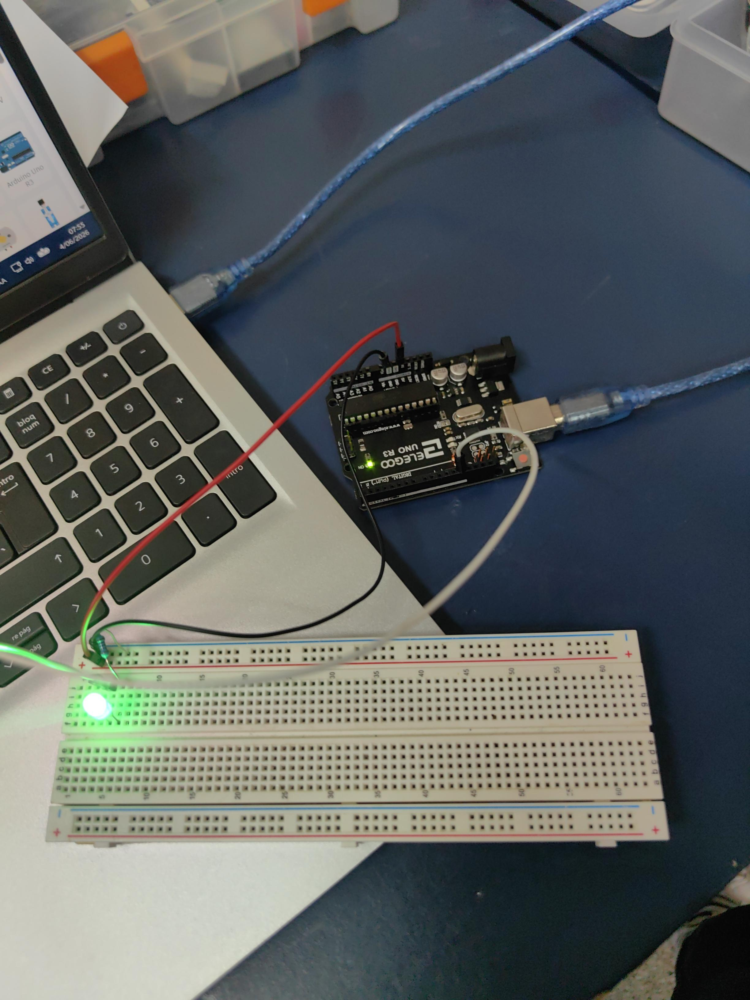

Contenido de la pagina WEB
Semana 1: Introducción a Arduino
Consulta el detalle completo de la sesión en el visor interactivo a continuación:
Semana 2:introduccion a la Robotica
En esta sesión exploramos los fundamentos de la robótica y el funcionamiento de los componentes básicos. A continuación, se presenta un video demostrativo de la práctica:
Semana 3: Circuito de prueba
En la siguiente imagen se observa el diseño del circuito con un LED, desarrollado en base a la programación en la plataforma Tinkercad:

Semana 4
En esta sesión se observa el circuito en thinkercad
Semana 5
En esta sesión se observa el circuito RGB fisicamente dando colores distintos al Rojo, Azul y Verde
Semana 6: Sensor Ultrasonico
En esta sesión se observa el sensor ultrasonico indicando con los leds la distancia a la que se encuentra un objeto